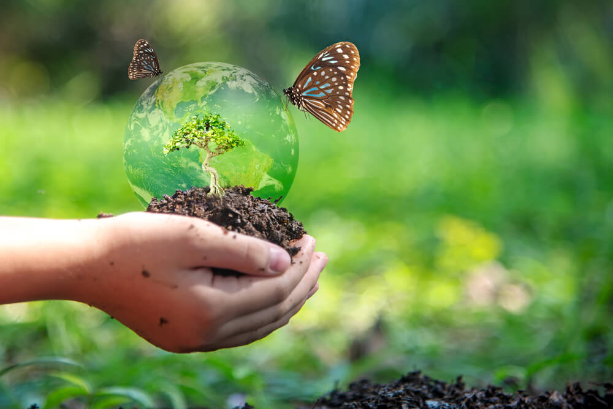
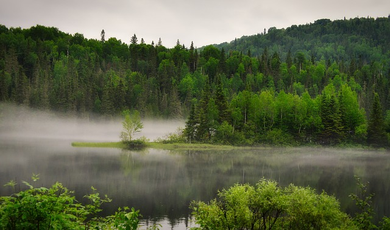

An ecosystem is a geographic area where living organisms and non-living components interact with each other, forming a bubble of life. Ecosystems can be marine, aquatic, or terrestrial, and can range in size from a pond to the Great Barrier Reef. They are often separated by geographical barriers such as oceans, rivers, lakes, mountains, and deserts.
Ecosystems are invaluable, providing essential services that sustain life on Earth. Economically, they offer resources like food, water, and timber, while regulating services such as climate control, water purification, and pollination are critical for our well-being. Moreover, ecosystems support biodiversity, contribute to ecological stability, and directly impact human health by providing clean air and natural spaces for recreation. Culturally, they hold significant value, serving as sources of inspiration and connection to heritage. Recognizing the comprehensive worth of ecosystems is vital for fostering sustainable development, preserving biodiversity, and ensuring the continued prosperity of both humanity and the planet. In addition to their economic, ecological, and cultural significance, ecosystems play a crucial role in mitigating climate change and enhancing resilience against environmental challenges.
For thousands of years, people have interacted with ecosystems. Many cultures developed around nearby ecosystems. Many Native American tribes of North Americas Great Plains developed a complex lifestyle based on the native plants and animals of plains ecosystems, for instance. Bison, a large grazing animal native to the Great Plains, became the most important biotic factor in many Plains Indians cultures, such as the Lakota or Kiowa. Bison are sometimes mistakenly called buffalo. These tribes used buffalo hides for shelter and clothing, buffalo meat for food, and buffalo horn for tools. The tallgrass prairie of the Great Plains supported bison herds, which tribes followed throughout the year.
Ecosystems can recover from destruction, however. The delicate coral reef ecosystems in the South Pacific are at risk due to rising ocean temperatures and decreased salinity. Corals bleach, or lose their bright colors, in water that is too warm. They die in water that isnt salty enough. Without the reef structure, the ecosystem collapses. Organisms such as algae, plants such as seagrass, and animals such as fish, snakes, and shrimp disappear.
Most coral reef ecosystems will bounce back from collapse. As ocean temperature cools and retains more salt, the brightly colored corals return. Slowly, they build reefs. Algae, plants, and animals also return.
A
n economic ecosystem refers to the interconnected network of organizations, individuals, resources, and institutions that interact within a specific economic environment. Similar to a natural ecosystem, economic ecosystems involve various elements that depend on each other for survival and growth.
In an economic context, this can include businesses, consumers, government entities, financial institutions, regulatory bodies, labor markets, and more. These components interact through processes such as production, distribution, consumption, investment, and regulation, creating a dynamic system of exchange and resource allocation.
Understanding the dynamics of an economic ecosystem involves analyzing factors such as supply and demand, competition, innovation, regulatory frameworks, economic policies, and socio-cultural influences. The health and resilience of an economic ecosystem depend on factors like the efficiency of resource allocation, the level of innovation and entrepreneurship, the stability of institutions, and the overall economic environment.
A social ecosystem refers to the interconnected network of individuals, groups, organizations, institutions, and cultural norms within a society. It encompasses the various elements and interactions that shape social life, including relationships, communication patterns, power dynamics, and shared values. Similar to an economic ecosystem, a social ecosystem is dynamic and complex, with multiple components that influence and depend on each other. These components can include families, communities, educational institutions, religious organizations, government agencies, media outlets, and more.
An ethical ecosystem is a complex web of interconnected elements that collectively influence and shape ethical behavior and decision-making within society. At its core are the moral beliefs, values, and principles held by individuals, which guide their actions and interactions with others. Additionally, organizations, including businesses, governments, and nonprofit entities, contribute to the ethical landscape through their adherence to codes of conduct and standards that promote transparency, fairness, and social responsibility. Cultural and societal norms play a significant role, shaping perceptions of right and wrong and influencing attitudes toward issues such as justice, equality, and environmental stewardship. Legal frameworks provide a formal structure for ethical considerations, although they may not always align perfectly with moral principles. Moreover, educational institutions play a crucial role in nurturing ethical awareness and moral development among individuals, contributing to the overall health of the ethical ecosystem. Together, these elements form a dynamic and interconnected system that shapes ethical behavior and fosters a culture of integrity and responsibility within society.
Terrestrial ecosystems encompass diverse habitats like forests, grasslands, deserts, and tundras. Forests, ranging from tropical rainforests to temperate and boreal forests, harbor rich biodiversity and serve as vital carbon sinks. Grasslands, characterized by grasses and herbaceous plants, support various wildlife. Deserts, with low precipitation and extreme temperatures, host specially adapted flora and fauna. Tundras, found in high latitudes, feature sparse vegetation adapted to cold climates and permafrost.
Aquatic ecosystems include marine, freshwater, and estuarine environments. Marine ecosystems, covering the majority of the Earth's surface, support a vast array of life, from microscopic plankton to large marine mammals. Freshwater ecosystems, such as lakes, rivers, and wetlands, are vital sources of drinking water and habitat for aquatic species. Estuaries, where freshwater rivers meet saltwater oceans, are highly productive ecosystems supporting unique communities adapted to fluctuating salinity levels.
Artificial ecosystems comprise urban, agricultural, and industrial environments. Urban areas, with parks and green spaces, support diverse flora and fauna. Agricultural landscapes provide food, fiber, and habitat, but sustainable practices are crucial for ecosystem health. Industrial activities can disrupt ecosystems through pollution and habitat destruction, highlighting the importance of minimizing environmental impacts through pollution control and habitat restoration efforts.


Antarctica's Dry Valleys are one of the coldest and driest places on Earth, yet they harbor microbial life in their frozen soils. These microorganisms have adapted to survive extreme conditions, offering insights into the resilience of life in harsh environments.
The Great Barrier Reef in Australia is the world's largest coral reef ecosystem, stretching over 2,300 kilometers (1,400 miles). It's so vast that it can be seen from space! This vibrant underwater ecosystem is home to thousands of species of fish, coral, and other marine life.
Yellowstone National Park in the United States is famous for its geothermal features, including geysers, hot springs, and mud pots. These unique ecosystems are fueled by heat from the Earth's mantle and support a diverse array of thermophilic bacteria and archaea, showcasing life's ability to thrive in extreme conditions.